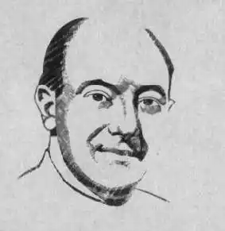

Голд Горацій Леонард (Gold, Horace Leonard)
(26 квітня 1914 – 21 лютого 1996)
Американський письменник-фантаст і редактор, автор понад сто повістей та оповідань, один із трьох редакторів журнальної фантастики, стовпів "золотого століття", поряд з Джоном Кемпбеллом (John Campball) та Ентоні Бучером (Anthony Boucher). Народився Горацій Голд в Монреалі (Канада), але коли йому ледве виповнилося 2 роки, сім'я емігрувала до США, де батьки прийняли американське громадянство. Хоча, до речі, Горацій до кінця свого життя зберігав подвійне громадянство. На новій батьківщині юнак закінчив початкову та середню школу, після чого зайнявся літературною діяльністю. Перша НФ публікація — коротка повість "Згин" (Inflexure, 1934), надрукований під псевдонімом Клайд Крейн Кемпбелл (Clyde Crane Campbell). Протягом десятка років, аж до призову до армії, опублікував десятки оповідань, деякі з яких пізніше були зібрані в єдину книгу письменника, опубліковану за життя – збірку "Старі вмирають багатими" (1955). У 50-х роках ХХ століття він продовжив свою літературну кар'єру, видавши безліч фантастичних повістей, оповідань, статей, які часто "ховав" під кількома псевдонімами, а саме: — Клайд Крейн Кемпбелл (Clyde Crane Campbell); — К. К. Кемпбелл (CC Campbell); — Клайд К. Кемпбелл (Clyde C. Campbell); — Лі Кейт (Leigh Keith); — Річард Сторі (Richard Storey); — Дадлі Делл (Dudley Dell); — Гарольд С. Фоссі (Harold C. Fosse); — Джуліан Грей (Julian Graey). Після смерті письменника, у 2002 році з друку виходить роман "Не тільки Люцифер" (None But Lucifer) — свого роду сучасна американська версія доктора Фауста. Герой книги Вільям Холл, який живе в Нью-Йорку часів Великої депресії, мав намір перехитрити самого диявола. Роман був написаний для журналу Unknown Magazine, що редагувався Джоном Кемпбеллом (John Campball). Останні глави Горацій Голд писав вже у співавторстві з Л. Спрег де Кампом (L. Sprague de Camp) і роман був опублікований у 1939 році. Нещодавно була випущена збірка детективних творів Горація Голда "Здійснені вбивства" (2002), написані ним у середині ХХ століття. Цікавий факт: одружився Г. Голд 1 вересня 1939 — у день, коли почалася друга світова війна, під час якої він протягом двох років служив військовим інженером на Філіппінах. У його армійській картці значилося: " …батьківщина – Канада, мешканець Нью-Йорка, закінчив 4 класи середньої школи, одружений, білий, завербований 31 березня 1944 року…". Під час військової кампанії Голд отримав поранення, що призвело до психологічної травми, а саме до агорафобії (страх відкритого простору), що вплинула на все подальше життя літератора. Після демобілізації він переключається на редакторську роботу, очолюючи створені ним журнали виключно телефоном зі свого будинку. З 1939 по 1961 роки, Горацій Голд редагував кілька журналів фантастики: спочатку як помічник редактора в Captain Future (1939-41), Startling Stories (1939-41) і Thrilling Wonder Stories (1939-41), а пізніше самостійно в Galaxy Science Fiction Magazine (1950-61), Worlds of If Science Fiction (1952-61) і Beyond Fantasy Fiction (1953-55). Він також вів передачу Minus-One на радіостанції NBC Radio, писав комікси, детективні п'єси на замовлення, працював на телебаченні, а з 1961 р. змушений був вийти на пенсію з інвалідності. Свою популярність редактора Горацій Голд набув тим, що почав платити авторам по 3 (і більше) центи за слово, коли інші журнали виплачували гонорари лише в середньому за півцента за слово. До того ж відома особлива прихильність редактора до молодих авторів, у результаті журнал "Galaxy" на ціле десятиліття став одним із найкращих видань наукової фантастики у США. Він вважається ще й "батьком" кишенькової книги в м'якій обкладинці, так званий "pocketbook": антології цього формату він почав випускати у 1950-ті роки та його ідею дешевих книжок підхопили інші видавництва. Він був двічі одружений (з першою дружиною розлучився 1957 року, вдруге одружився 1964-го); син Юджин, який народився 27 грудня 1941, згодом також став письменником, редактором, художником. Три з половиною десятки років Горацій Голд провів на самоті з сім'єю і помер 1996 року в м. Лагуна-Хіллс (штат Каліфорнія).